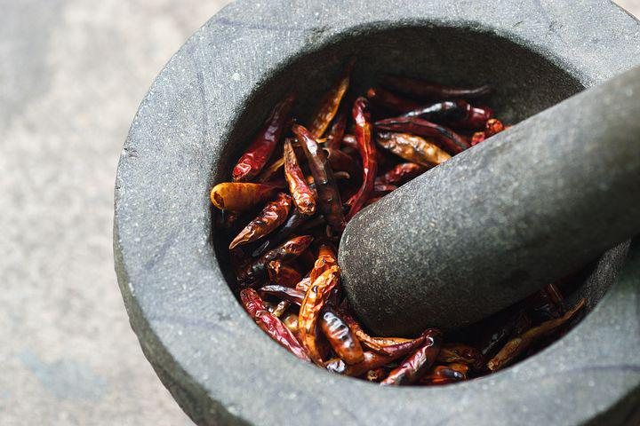

The most essential tools for the traditional Thai kitchen.
The wok
is brought to Thailand by Chinese immigrants in the 1800s. It is now
an essetial part of Thai cooking and ideal for both frying and
deep-frying.

The mortar
is the most important tool in the Thai
kitchen, for making a spice paste, a mash of fresh herbs, chillies
forming the base of almost every Thai dish.
Coconut scrapers
are for extracting coconut flesh.
If you use coconut in daily recipes, this tool is a must-have for
you. But of course you can buy dried coconut flakes in the shop.
Basket for steaming rice
Thai pandan rice for main dishes or sticky rice mostly for desserts
like mango and sticky rice.
The cleaver
many traditional Thai kitchens use just one knife. originally the
knife was a Chinese-style cleaver, perfect for almost everything
from chopping herbs to cutting through bones.
The chopping block
is made from tamarind wood,
considered the strongest wood available.
The steamer
is one of the most used tools in the Thai
kitchen, they use it for spicy salads and also desserts.
The Brass wok
is important for making the Thai Dessert because you can cook the
Coconut Milk, Sugar Melting etc.